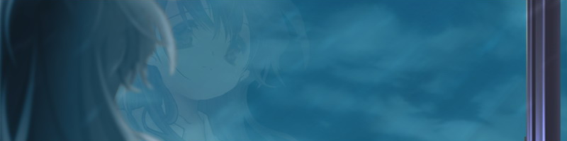
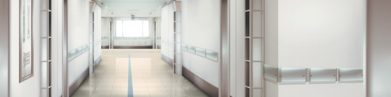

1996年 春 濑津美「···从小时候起，我的身体就很虚弱···」 但是，我也拥有和其他孩子一样的小学时代 那时到了暑假，我也会在外边一直玩耍到皮肤被晒黑 6月···在我刚刚进入初中的那年 在我满怀兴致地订购了体育课泳装的第二天 那一天，我头一次尝到了住院的滋味 那是第一学期期中考试之前 梅雨降临不久后的一个寒冷刺骨的日子 下着梅雨的苍白天空 当然，在最初的日子里 班里的同学们几乎每天都会来探望我 出院的时候 她们也会利用周末到我家里来玩 但是，这一切都只发生在最初的日子里而已 秋去冬来，四季流转 住院，出院，检查··之后再次住院。我的生活也在单调地轮回着··· 那些曾经被我当作「朋友」的同学们 在不知不觉中慢慢地变成了「熟人」 最终，渐渐地，变成了「陌生人」 随着岁月的流逝，我的身影也在她们的记忆之中逐渐变淡··· 最终消失无痕  「···看来，她们似乎『不喜欢』我」 「对普通人来说，我的存在只是一个累赘」 「所以···才会被人们从记忆中抹去···」 「在这个只看得到自己的世界里··· 我送走了不知多少个季节···多少次下着梅雨的苍白天空」 「我的英语教科书， 自从1年级的期中考试之后，就再也没被翻开过」 「···从那时起···我的时间就停止了」
8年后···2004年 初夏 主人公夏日炎炎，灼烤着满头的汗水 驾照考场的一隅，放置着一块巨大的电子公告板 屏幕上的小灯泡依次亮了起来 我和在场的所有人一样，抬头寻找着自己的考号 「237、237···」 在令人眼花缭乱的文字中 我终于发现了自己的号码 咣当、咣当 中午时分，正是其他人忙碌的时候··· 太阳升起和落下时都会拥挤不堪的列车，此时则显得冷冷清清 我坐在这空旷的车厢一角 任由它带着我往家的方向驶去 左手握着刚刚收到的交规课本 胸前的口袋里揣着崭新的驾照 「我现在也算是有驾照的人了···」 一本正经地感慨了一下，心中对此却没有丝毫现实感 我不是很想要开车 也并非有着什么其他的目的 只是因为周围有很多人都去了驾校 而且他们经常劝说我也去考一张驾照 这一天夜里 我将获得驾照的事情告诉了父母 「是吗」，回应是如此的简短 我试着问道，能否借用父亲的车子 「不行」 我得到的是一句同样简短的答复 其实我并不想开车 而他们的答复也和我的预想完全一致。这就是我的父母 第二天 醒来后，我觉得胸口很难受。于是就去了医院 我平时很少生病 所以候诊的时间让我感到百无聊赖 好不容易盼到诊察结束 却又被送去做了透视检查和血液检查 之后，又被撂在了候诊室里 无所事事地等待了很长很长的时间··· 不知不觉间读完了候诊室中摆放着的3本漫画杂志 正当我将手伸向第4本的时候··· 医生出现了···他命令我办理了住院手续 我摸了摸口袋中那张崭新的驾照 看来暂时不会有使用到它的机会了2004年 秋 主人公到了蝉鸣的喧嚣渐渐平静下来的时节 我仍然待在医院之中 当然了，我也不是一直都住在医院里 只是不停地重复着入院与出院的过程 上个月，我平生第一次尝到了手术的味道 出院后，还需要频繁地前往离家5分钟路程的医院，去接受定期检查。 之后，便是住院、出院、检查、住院的循环··· 尽管不知道「PET」啊、「易瑞沙」啊···都是些什么东西， 但不知不觉间，这单调的循环已经持续了几个月 食欲越来越差，服用药物的量与种类倒是与日俱增 我也终于深刻地体会到，自己的体力正在不断减弱 我发觉双腿越来越消瘦 体重计的指针告诉我 「这并不是错觉」 但是··我却冷漠地旁观者自己 仿佛这是别人的事情似的 仿佛正在看着电视画面似的 面对突如其来的现实，我还没有机会去思考太多 我无法对发生在自己身上的事情产生任何的切实感 所以，尽管是自身的事情 但我却以旁人的眼光注视着它2004年 冬 主人公隆冬时节 当街头巷尾的圣诞气氛终于消散殆尽的时候 或许是在新年之前不想留下晦气吧，医生们打发我回家了 当然，回家只是暂时性的 但即便如此，我还是感到了一丝欣慰 冒着夹杂了冰滴的雨水 我回到了久违的家中 出乎我的意料，亲人们全都聚集在家里 平时很少和我交谈的父母 摆出一副慈祥的表情迎接了我 平日里没少和我拌嘴的妹妹 也做好了我最爱吃的奶油炖菜和炸虾排 大家一起围坐在暖桌旁，抢着为我剥桔子皮 他们留给我的唯一印象，是那异乎寻常的亲切 这时···我隐约察觉到了 依然躺在我口袋里的那张崭新的驾照 不出意外的话 永远都不会有它的用武之地了 在充满了做作的温馨气氛之中··· 我冷静地、茫然地、漠不关心地思索着2005年 1月 主人公新年过后，我再次回到了医院里 不知为何，这一天我并没有像以往那样被送到4楼 而是被带到了一间布置得像客厅的房间里 之后 我静静地听着父亲与医生翻来覆去地对我嚼着舌头 这就是所谓的病危通知吧 他们拐弯抹角地说了一大堆 归结起来就是···我似乎快要死了 「是吗···」 所以，我只是简短地回答了一句 也没能想到其他可以说的话 直到走出客厅为止，我只说出了这一句话 听到我的回答 医生拿起圆珠笔开始写着什么 大概是转入疗养院的手续吧 他仅仅是在完成自己的工作而已，父亲的态度也与他相仿 ···人的死，原来这么简单啊 这是我发自内心的感想 之后，从这一天开始，我由4楼转入了7楼 由6人病房转入了单人病房  看起来，7楼的气氛与其他的楼层明显不同 首先，地板被擦得很亮 房间也变得更加宽敞了 病房被打扫得一尘不染 日光透过巨大的玻璃窗射进屋内 ···但是，窗户却只能拉开一道窄窄的缝隙 我试了试 人类的头部是无法通过这道缝隙的 而且，识别用手环的颜色也变了 从入院那天开始，我手腕上就一直佩戴着一只塑料手环 上面记载着我的姓名和血型 现在，它的颜色由蓝色换成了白色 ···宽敞的房间，白色的塑料手环，仅能拉开15cm的窗户 在电视台开始播放无聊的新春节目的时候 我来到了7楼 也正是在这新年伊始的时候 我结识了那位女孩
序章